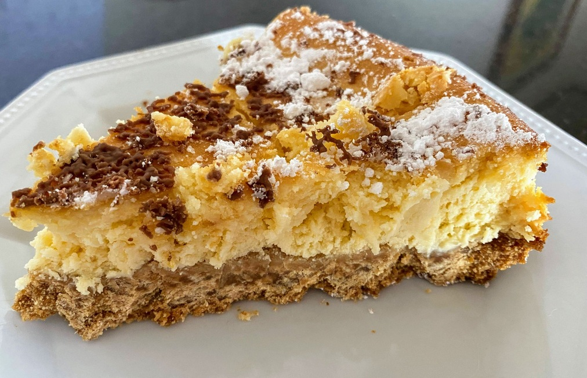

Baked Cheesecake

Preheat oven to 160 degrees and grease round spring-form pan
1 packetmilk arrowroot biscuits
Blend milk arrowroot biscuits
150gmargarine
Add margarine and refrigerate for 15mins
500gcream cheese3/4 cupcaster sugarsomelemon rind
Beat cream cheese, caster sugar, and lemon rind together.
3eggs
Add eggs one at a time until combined.
1/4 cuplemon juice
Add lemon juice and beat for another minute
Pour mixture over biscuit base and bake for 50 mins or until filling has set.
Allow to cool in oven, and then refrigerate for 4 hours before eating